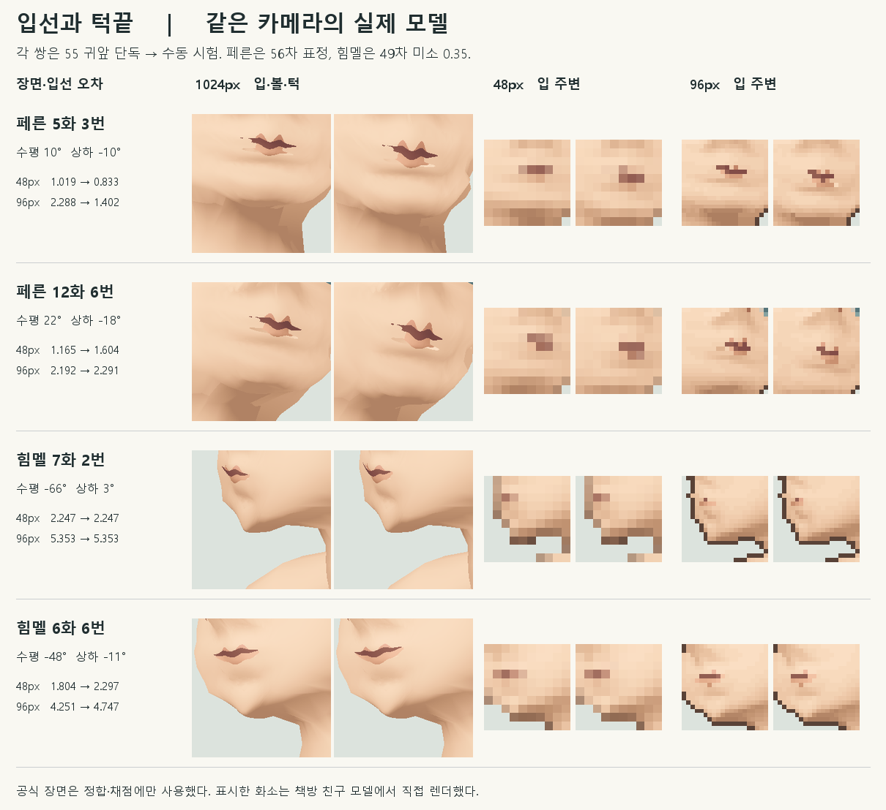
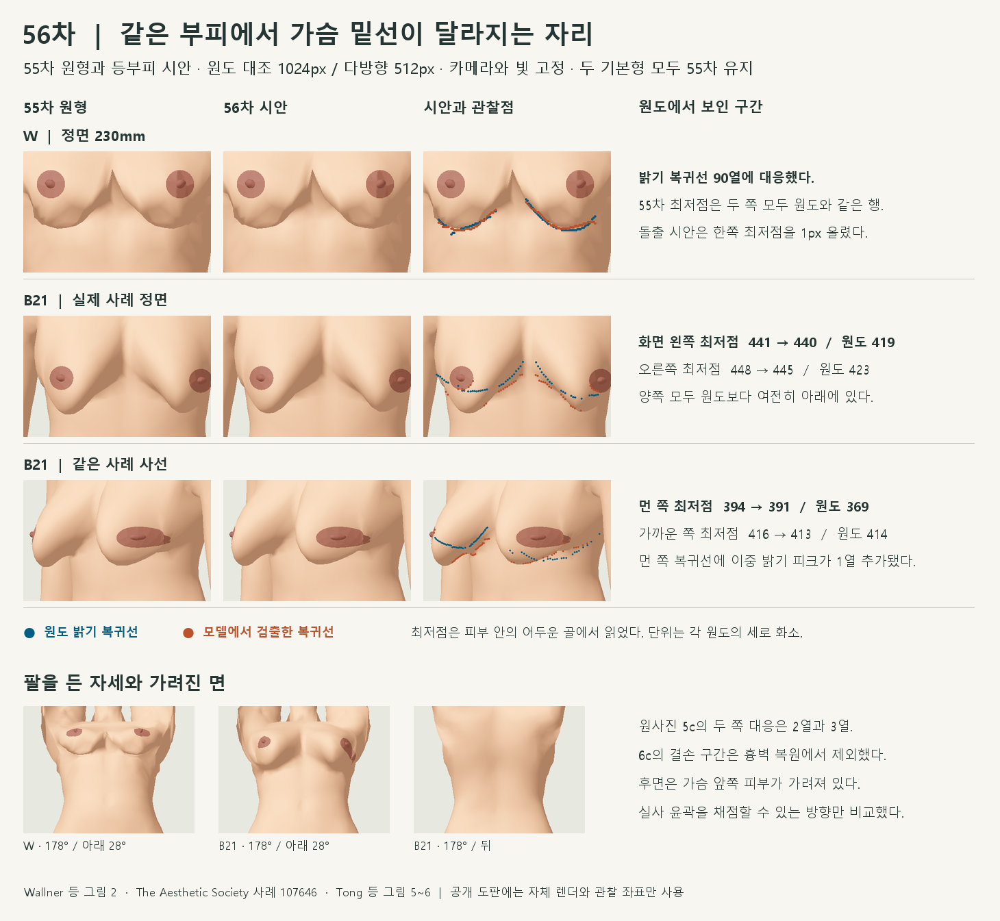
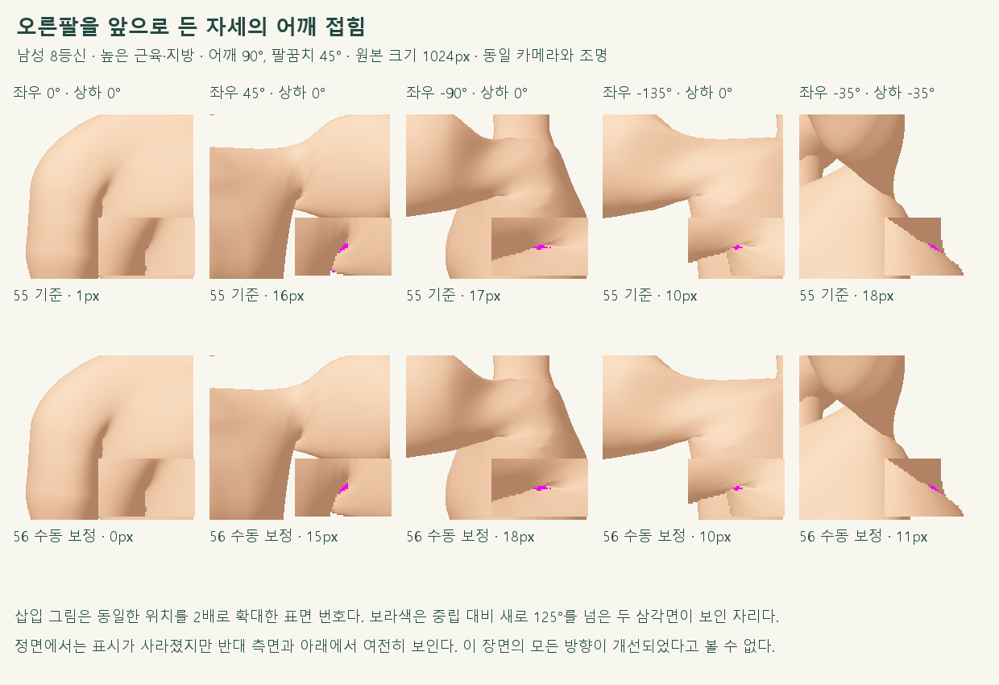

페른의 조금 벌린 입과 힘멜의 다문 미소
페른 5화 3번 장면의 눈·코로 구도를 먼저 맞추고 입선과 노출된 턱에서 오차를 쟀다. 귀 앞 피부만 이은 55차 기준에서 이번 후보로 바꾸면 48px 입선은 1.019→0.833px, 96px에서는 2.288→1.402px로 가까워졌다. 248px 기준 턱끝 쪽은 12.542→3.945px가 됐지만 볼 쪽은 2.184→2.951px로 멀어졌다. 값을 고정한 뒤 12화 6번에서는 실제 48px 입선이 1.165→1.604px로 악화했다. 1024px로 보면 윗입술 가운데가 두 갈래로 너무 짙어진다.
힘멜은 같은 55차 피부에 기존 미소를 0.35만큼 주어 따로 시험했다. 6화 6번의 48px 입선은 1.804→2.297px로 멀어졌다. 두 인물의 중립은 49차 보존형을 유지한다. 페른은 해당 장면을 재현하는 수동 시안으로 열 수 있다.

가슴 밑선의 낮은 점과 흉벽으로 돌아가는 선
기본형 W는 정면에서 좌우 밑선의 가장 낮은 위치가 지정 도판과 이미 같았다. 하부를 더 돌출시키자 측면 외곽 오차가 1.41→1.56px로 커졌다. B21은 원형 부피와 반대쪽 표면을 보호하며 정면·사선의 낮은 점을 1~3px 가깝게 옮겼지만 바깥 밑선의 기울기가 원도와 반대로 남았다. 팔을 178° 들고 아래에서 본 장면에서는 이중 명암이 생긴 열이 5개에서 7개로 늘었다.
제한형과 진폭을 바꾼 최종 조합 42개 중 여러 방향의 조건을 동시에 만족한 조합은 0개다. W와 B21의 실사용 형상은 55차를 유지한다. 아래 도판에는 적용을 보류한 시안도 함께 남겼다.

팔을 들 때 반대 어깨가 따라 움직이는 현상
한쪽 팔의 명령이 반대쪽 겨드랑이 피부까지 미치는 현상을 분리했다. 든 쪽은 몸통·팔의 경계 고리를 고정하고 새로 접힌 면 주변만 다시 폈다. 14개 기본형에 세 체성분과 여섯 자세를 적용해 252조건을 검사했다. 중립에서 없던 급접힘이 있는 자세가 89→60개가 됐다. 대표 장면의 실제 1024px에서도 정면 표시는 1→0화소, 아래 시점은 18→11화소, 반대 측면은 17→18화소였다. 강도 0%와 100%를 같은 자세에서 바꿔 보며 선이 남는 방향을 살펴볼 수 있다.

이 표식을 끄고 원래 피부색으로 실제 크기를 비교했다. 열 방향 중 48px에서는 뒤쪽 한 방향에서 한 화소만 달랐고, 96px에서는 두 방향에서 각각 한 화소가 달랐다. 두 해상도 모두 외곽 화소는 같았다. 1024px에서는 같은 각도의 피부색이나 외곽이 133~2,065화소 달랐다. 작은 화면에서 어깨 형태가 뚜렷이 나아졌다고 판단할 근거는 아직 없다.
발을 디디고 웅크리는 동작과도 결합했다. 세 기본형 48프레임에서 좌우 다리·팔뼈 길이와 발목 위치, 재진입 때의 어깨 위치를 확인했다. 남성 8등신에서 정지 후 처음 팔을 0.001° 들면 피부가 머리 높이 0.00725만큼 불연속적으로 움직였다. 이 시작 구간과 측면 겨드랑이가 다음 회차의 우선 수정 대상이다.
사진과 모델의 피부 표식이 같은 곳인지 확인하기
실측 연구에서 등쪽 겨드랑이의 표식 19와 20 사이가 앞으로 팔을 90° 들 때 60.12% 늘었다. 우리 모형에서는 표시 위치를 어깨 반폭의 3%만 안쪽으로 옮겨도 20번이 위팔 연결면에서 몸통으로 넘어갔다. 거리 변화가 233.17%에서 12.16%로 바뀌므로 이 점은 원전의 실제 피부 위치와 대응할 때까지 조형 학습에서 제외했다.
이번 회차의 기록과 다음 검토
실제 전후 수치가 있는 관찰 77건을 기록했다. 얼굴·성인 가슴의 기존 조형 보강에 30%, 나머지 70%에는 어깨 표면·복합 자세와 검증을 배정했다. 병렬 작업의 전체 실투입 시간을 같은 기준으로 계측하지 않아 시간 비율의 실적은 확정하지 않았다. 실험실의 수동 후보는 모두 제작 검토 단계다.